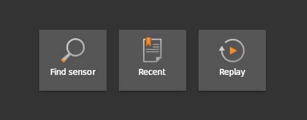

Starting the ifmVisionAssistant and connecting to the O3R-System
Start the ifmVisionAssistant
After executing the ifmVisionAssistant.exe, the ifmVisionAssistant is loading and opening the start screen.
Start screen overview
The start screen is separated into three sections: ``Find sensor,Recent, and Replay` sections

Section |
Description |
|---|---|
Find sensor |
Automatically find a ifm vision sensor (O2I, O2D, O3X, O3D, O3R, etc.) |
Recent |
Show all recently connected systems |
Replay |
Replay previously recorded data (recorded by the ifmVisionAssistant) |
Connection
By using find sensor
To automatically connect the ifmVisionAssistant with the O3R system, a peer to peer connection is necessary. Having a switch and/or a router in between (leaving the broadcast domain), will interfere or make the automatic search impossible.
In these circumstances, or if the ifmVisionAssistant cannot automatically find the O3R system, a manual connection is necessary.

Manual connection
To connect manually to a system, the respective article and IP address of the system is needed. To open up the manual connection dialogue, please press the keyboard shortcut CTRL + M.
After choosing the article OVP800 == O3R, the IP address is requested.
Warning: Both the O3R and the PC need to be in the same network address area. The default IP for the O3R is 192.168.0.69. The PC should not have this IP address.

Connect to recent systems by using Recent
The ifmVisionAssistant saves former established connections. This could also include other hardware like O2I, O2D, O3X, etc.
Using the recent connection can save time instead of always using the find/manual connection.